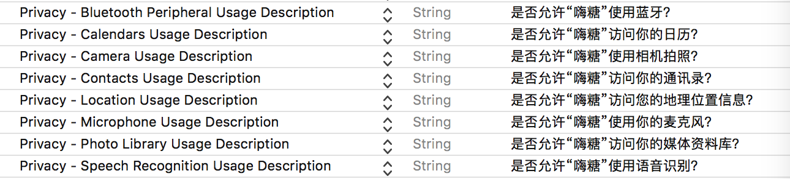

iOS 隐私使用说明（Privacy Usage Description）
遇到问题
-
今天遇到了一个很奇怪的问题，App 的新版发布好了，用 Xcode 上传到 App Store 显示 Success 的标志了。却在 iTunesConnect 的对应 App 的活动>构建版本中，怎么也找不到了。然后修改了 build 的版本号，重现打包上传了好几依然找不到，这让我百思不得其解，完全懵逼！
-
试着搜索 Xcode 打包上传成功 构建版本中找不到，有很多人遇到了同样的问题，原来都是 隐私使用说明 没有设置惹得祸呀。
-
然后翻阅一下官方文档对应的信息 App Programming Guide for iOS 看到了 The Information Property List File 下的一段信息
Apps must provide purpose strings (sometimes called “usage descriptions”) for accessing user data and certain app features. When there is a privacy concern about an app accessing user data or device capabilities, iOS prompts the user and requests permission on behalf of your app. An app must explain to the user, by way of a purpose string defined in its Info.plist file, why it requires access. If your app attempts to gain access without having provided a corresponding purpose string, your app exits.
解决问题
-
我们在 Info.plist 中设置好 隐私使用说明 就好了 隐私说明的key参照
-
如下图所示做类似的设置然后修改 build 的版本号，重新打包上传就好了 